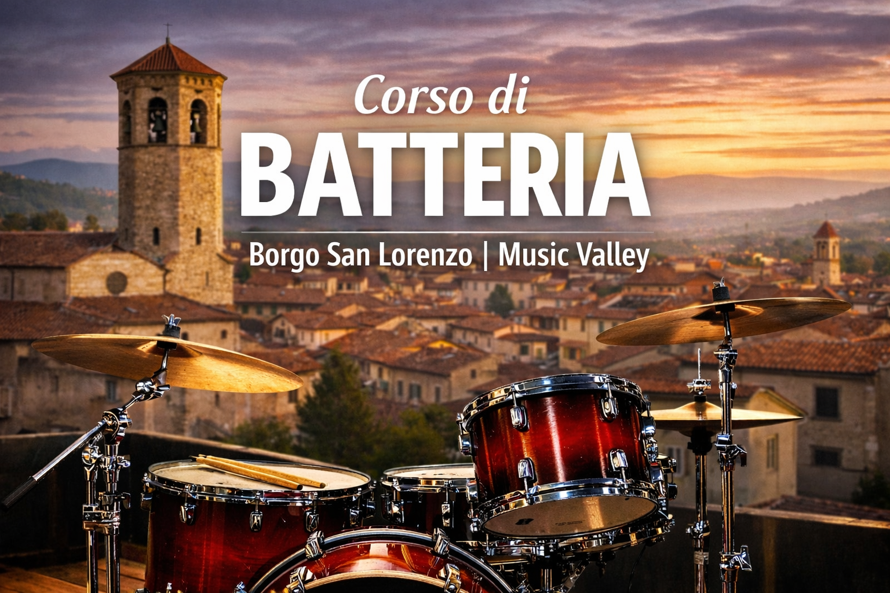

Corso di Batteria
Impara a suonare la batteria a Borgo San Lorenzo

Il corso di batteria di Music Valley, Scuola di Musica Comunale di Borgo San Lorenzo,è rivolto a bambini, ragazzi e adulti che desiderano avvicinarsi allo strumento o approfondire le proprie competenze musicali attraverso un percorso strutturato e personalizzato.
Le lezioni sono individuali e costruite sul livello dell’allievo, con l’obiettivo di sviluppare tecnica, consapevolezza ritmica e musicalità, accompagnando ogni studente in un percorso di crescita coerente e motivante.
Tecnica, ritmo e consapevolezza musicale
Il programma del corso affronta lo studio della tecnica di base e avanzata, della coordinazione e dell’indipendenza degli arti, insieme alla lettura ritmica e allo sviluppo del tempo e del groove. Durante le lezioni vengono esplorati diversi linguaggi musicali, tra cui rock, pop, funk, jazz e musica contemporanea, attraverso esercizi progressivi e applicazioni pratiche sullo strumento. Particolare attenzione è dedicata alla propriocezione motoria e alla tecnica del movimento, fondamentali per suonare con scioltezza, controllo e naturalezza, prevenendo tensioni e affaticamenti.
Gli insegnanti di batteria
Il corso di batteria è tenuto da Riccardo Cardazzo, Tommaso Corsini e Andrea Sciarra, tre batteristi professionisti con esperienze artistiche e didattiche differenti ma complementari.
Riccardo Cardazzo guida gli allievi nella costruzione di una solida base tecnica e musicale, ponendo attenzione alla precisione, al suono e alla comprensione del linguaggio ritmico.
Tommaso Corsini accompagna gli studenti nello sviluppo dell’ascolto e della capacità di suonare all’interno di un contesto musicale condiviso, elementi fondamentali per ogni batterista.
Andrea Sciarra, batterista professionista attivo su numerosi palchi nazionali, unisce all’insegnamento l’esperienza maturata dal vivo e una didattica orientata alla musica contemporanea.
Dallo studio alla musica d’insieme
Il corso di batteria può essere affiancato ai laboratori di musica d’insieme, permettendo agli allievi di suonare in band e applicare le competenze acquisite in un contesto reale. Music Valley accompagna gli studenti dalla prima lezione fino all’esperienza del palco, favorendo lo sviluppo del timing, dell’interazione musicale e della consapevolezza artistica.